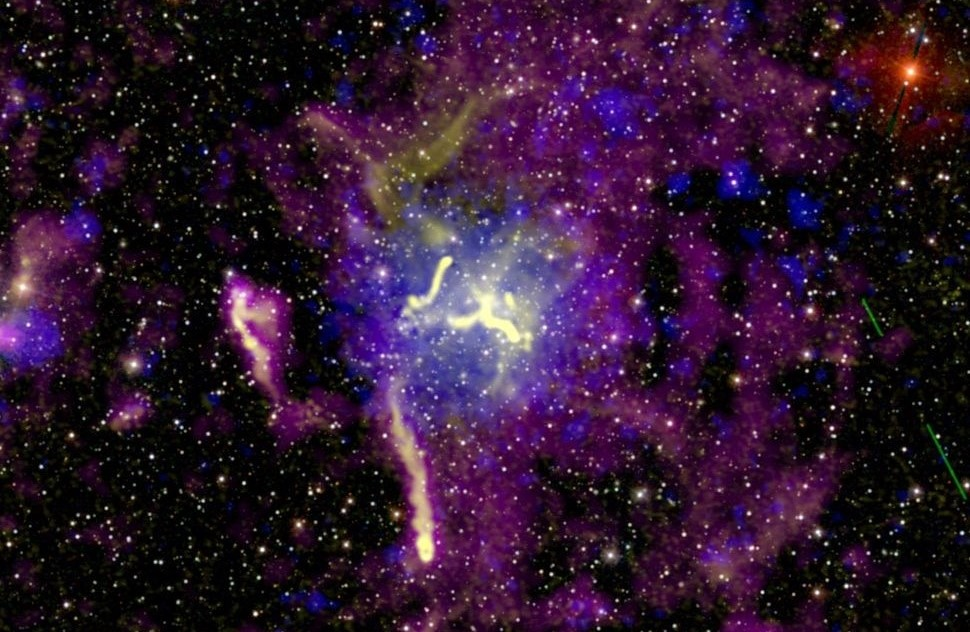

Telescop unde radio
Cele mai multe radiotelescoape au o antenă din metal parabolică, care joacă rolul unei oglinzi concave, concentrând prin reflexie, într-un focar, undele recepționate. Azi radiotelescoapele constau din mai multe antene parabolice (engl. array = ordonare, așezare, serie, câmp, rețea). Antenele dintr-un array sunt cuplate între ele, astfel încât suprafața tuturor antenelor sale constituie o suprafață totală mare. Avantajul este că pot fi observate concomitent mai multe obiecte (surse) cerești. Azi astfel de radiotelescoape obțin imagini de o rezoluție comparabilă cu imaginile telescopului optic.
Calitatea rezultatelor obținute e influențată nu numai de diametrul antenei, dar și de sensibilitatea instrumentelor care detectează impulsurile primite. În timp ce telescoapele mari pot recepționa unde radio cu lungimile de undă cuprinse între metri și câțiva centimetri, telescoapele mai mici, ca de exemplu telescopul IRAM din Spania sau KOSMA din Elveția cu diametrul antenei de 30 m, pot recepționa unde cu lungimi de ordinul milimetrilor. Radiotelescoapele sunt utilizate și la observarea corpurilor cerești lansate de om, prin recepționarea datelor emise de sondele spațiale îndepărtate.